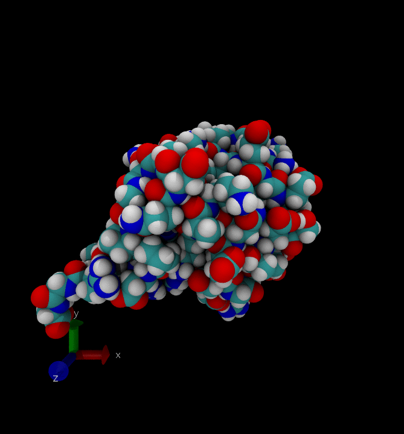
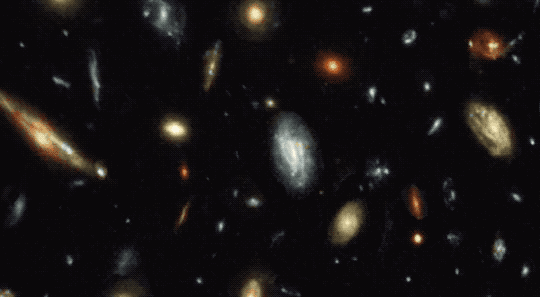

class: center, middle, title-slide # AI Methods for Science ## CDS DS 595 ### Siddharth Mishra-Sharma Wed, January 22, 2026 [smsharma.io/teaching/ds595-ai4science](https://smsharma.io/teaching/ds595-ai4science.html) --- # Two Nobel Prizes in 2024 .cols[ .col-1-2[ **Chemistry**: Hassabis, Jumper, Baker -- AlphaFold and computational protein science. *AI for science.* **Physics**: Hopfield and Hinton -- neural network foundations. *Science for AI.* - The two directions have always been intertwined - This course lives at the intersection ] .col-1-2[ .center.width-90.shadow[] .center.small.muted[*Source: nobelprize.org*] ] ] --- # Mercury's perihelion .cols[ .col-1-2[ Mercury's orbit precesses -- the ellipse slowly rotates. Newtonian mechanics explains most of it (perturbations from other planets), but **43 arcseconds/century remained unexplained**. In 1915, Einstein derived general relativity from first principles, explaining the discrepancy. Anomaly → theory → prediction ] .col-1-2[ .center.width-70[] .center.small.muted[*Source: Wikipedia*] ] ] --- # A thought experiment Suppose I give you a black box. You feed it positions and velocities of celestial bodies; it outputs their trajectories. More accurate than GR, and predicts anomalies GR can't explain. You don't know how it works! Is this science? Is it better than GR? Worse? Different? .center.width-70[] --- # That box exists .cols[ .col-1-2[ AlphaFold (2020). 200 million protein structures predicted. Not trajectories, but the same structure: physics we understand in principle, can't compute in practice, bypassed by a black box. This pattern of **bypassing intractable calculation** through computation predates deep learning by decades. ] .col-1-2[ .center.width-100.shadow[] .center.small.muted[*Jumper et al., Nature (2021)*] ] ] --- # Bypassing the intractable: Monte Carlo (1946) .cols[ .col-1-2[ Stanisław Ulam, recovering from encephalitis, wanted the odds that a solitaire hand would work out. Too many combinations to enumerate. Just play it a hundred times and count. The same idea applied to Los Alamos calculations: tracking neutrons through thousands of random interactions to predict critical mass. ] .col-1-2[ .center.width-70[] .center.small.muted[*Estimating π by sampling*] ] ] --- # Bypassing the intractable: Monte Carlo (1946) .cols[ .col-1-2[ The first implementations were done on ENIAC, one of the earliest electronic general-purpose computers, in 1947–48. Von Neumann realized computers weren't just fast calculators, but could simulate physics that no one could solve on paper. ] .col-1-2[ .center.width-100[] .center.small.muted[*John von Neumann and the IAS computer in 1952. (Courtesy: Alan Richards/Shelby White and Leon Levy Archives Center, Institute for Advanced Study)*] ] ] --- # Monte Carlo: sample and average .cols[ .col-2-3[ Draw samples and average to solve high-dimensional integrals. High-dimensional integrals, statistical mechanics, Bayesian posteriors -- problems that have no closed form and are (for practical purposes) intractable can be computed. ] .col-1-3[ .center.width-100[] ] ] --- # *N*-body simulation (1970) How do galaxies cluster? Consider $N$ particles feeling gravity from all others. Newton's second law for particle $i$: $$m\_i \ddot{\mathbf{r}}\_i = \sum\_{j \neq i} \frac{G m\_i m\_j}{|\mathbf{r}\_j - \mathbf{r}\_i|^3}(\mathbf{r}\_j - \mathbf{r}\_i)$$ .center.width-80[] --- # *N*-body simulation (1970) .cols[ .col-1-2[ Peebles (1970): 300 particles initially at rest in a sphere. Integrate forward numerically. After collapse and virialization -- a cluster of galaxies emerges. The simulation *is* the solution. The simulator encodes our model. .center.width-50[] .center.small.muted[*Coma cluster. Wikipedia*] ] .col-1-2[ .center.width-80[] .center.small.muted[*CDC 3600 at NCAR, 1960s*] ] ] --- # *N*-body simulation (today) .cols[ .col-1-2[ 1980s: Cosmological simulations with realistic initial conditions revealed the cosmic web -- filaments, clusters, voids. Comparing simulated clustering patterns to observations constrains our cosmological models. Subtle differences teach us about the origins of the universe. .small.muted[Peebles won the Nobel in Physics in 2019. Today: [~4 trillion particles](https://abacussummit.readthedocs.io/en/latest/visualizations.html) in single simulations.] ] .col-1-2[ <video width="100%" autoplay loop muted playsinline> <source src="figures/nbody-simulation.mp4" type="video/mp4"> </video> .center.small.muted[*Aquarius simulation; Springel et al. (2008)*] ] ] --- # Simulators as models Across domains, simulators often encode our best understanding of physical processes. <div style="display: grid; grid-template-columns: repeat(4, 1fr); gap: 0.8em; margin-top: 0.5em;"> <div style="text-align: center;"> <video width="100%" autoplay loop muted playsinline style="border-radius: 4px;"> <source src="figures/atlas-collisions.mp4" type="video/mp4"> </video> <div class="small muted">Particle collisions</div> </div> <div style="text-align: center;"> <p></p> <div class="small muted">Molecular dynamics</div> </div> <div style="text-align: center;"> <video width="100%" autoplay loop muted playsinline style="border-radius: 4px;"> <source src="figures/mujoco-robot.mp4" type="video/mp4"> </video> <div class="small muted">Robotics</div> </div> <div style="text-align: center;"> <p></p> <div class="small muted">Cosmology</div> </div> </div> <div class="small muted" style="margin-top: 0.5em; display: flex; align-items: center;"> <span>$10^{-18}$ m</span> <span style="flex: 1; height: 1px; background: #888; margin: 0 0.5em;"></span> <span>$10^{27}$ m</span> </div> .center.small.muted[AI methods enable effective use of simulators in many cases!] --- # Computation as the bridge .left-two-thirds[ **First principles would be great!** Mercury's anomaly → general relativity → 43 arcseconds/century. **But often we can't:** intractable integrals, chaotic dynamics, combinatorial explosion. Also our cognitive limits! *Pattern matching brain* can only take us so far. **Computation lets us sidestep -- or *externalize* -- derivation.** Sample (Monte Carlo). Simulate (*N*-body). Learn/compress (neural networks). We get answers that first principles *could* give, if we could wait forever, or if we were smarter. ] -- .right-third[ .center.width-100.shadow[] .center.small.muted[*Pattern-matching brains let us discover the Higgs boson*] ] --- # The Bitter Lesson .cols[ .col-1-2[ > "General methods that leverage computation are ultimately the most effective, and by a large margin." .small.muted[Richard Sutton, ["The Bitter Lesson" (2019)](http://www.incompleteideas.net/IncIdeas/BitterLesson.html)] - .green[1997]: Deep Blue beat Kasparov with hand-tuned rules - .red[2017]: AlphaZero taught itself chess -- no human knowledge -- crushed Deep Blue's successors - .green[2024]: [Specialized math systems (AlphaProof) got IMO silver](https://deepmind.google/blog/ai-solves-imo-problems-at-silver-medal-level/) - .red[2025]: [Generalist model got gold](https://deepmind.google/blog/advanced-version-of-gemini-with-deep-think-officially-achieves-gold-medal-standard-at-the-international-mathematical-olympiad/) ] .col-1-2[ .center.width-100.shadow[] .center.small.muted[*Source: Our World in Data*] ] ] --- # The Bitter Lesson in science? .cols[ .col-1-2[ AlphaZero could generate unlimited training data through self-play, but in science we often can't. Data is expensive: experiments, observations, simulations. We can't always brute-force our way to better models and to understanding! So we should encode what we know: symmetries, conservation laws, causal structure. ...or should we? We will confront this tension in this course. ] .col-1-2[ .center.width-100.shadow[] .center.small.muted[*AlphaFold 3; Abramson et al., Nature (2024)*] ] ] --- # The Tradeoff: *Epistemic opacity* .red[Many computational methods come at a cost to transparency.] Humphreys (2004): computational science is a genuine epistemic break -- a new way of knowing. A process is *epistemically opaque* when no human can follow all the steps. E.g., simulations aren't "numerical experiments." They share features with theory and experiment, but are a secret third thing. .small.muted[Humphreys, *Extending Ourselves* (2004)] --- # A new way of doing science? Taking externalizing computation further still -- externalizing *cognition*. .left-half[ .center.width-90.shadow[] .center.small.muted[*[Schwartz, arXiv:2601.02484](https://arxiv.org/abs/2601.02484)*] ] -- .right-half[ .center.width-70[] .center.small.muted[Smooth deformation from the status quo, or yet another epistemic break? *waitbutwhy.com*] ] --- # This is downstream of LLM capabilities improving rapidly Doubling times in time-horizon are ~5-7 months. .center.width-90[] .center.small.muted[*[METR, "Measuring AI Ability to Complete Long Tasks" (March 2025)](https://metr.org/blog/2025-03-19-measuring-ai-ability-to-complete-long-tasks/)*] --- class: middle, center, section-slide # This Course [smsharma.io/teaching/ds595-ai4science](https://smsharma.io/teaching/ds595-ai4science.html) --- # Course philosophy **Primarily a methods course** (similar to math methods in science depts), grounded in scientific applications. **Emphasis on application.** We'll learn theory as far as it helps us understand stuff and do/build things -- which can sometimes be a high bar! But we'll be grounded in empiricism. In lectures I'll go back and forth between slides and code. Assessment heavily project-based. **AI policy.** *Learning to use AI effectively is itself a course goal.* Collaboration with LLMs essential! This means a higher bar -- more complex assignments. Use AI tools freely to explore ideas, debug code, deepen understanding. Disclose AI assistance in submissions, including form and extent. .small.muted[By its nature this course is a bit of an experiment -- always the case for a first iteration, but in particular given the times we're in. Content is fluid. E.g., if an AI solves a Millennium Prize Problem in 2 months, we'll discuss that in depth!] --- # Who is this course for? You're a graduate student at any stage of your career, in any science domain, wanting to pick up computational/AI methods for your research. You want to learn methods grounded in scientific applications, but applicable more widely (e.g., industry R&D). You're curious about LLMs and how to use them / collaborate with them in a research setting. .small.muted[This is not at all exhaustive -- come talk to me if you're unsure!] **Prior exposure, ideally:** Basic probability, statistics, linear algebra, Python, some ML (what's a neural network, gradient descent), exposure to PyTorch or JAX, familiarity with a domain science. .small.muted[Some of these will be refreshed or can be picked up along the way -- talk to me if unsure!] --- # Course structure .cols[ .col-1-2[ **First half: .green["Foundations"]** - Bayesian inference, MCMC - Neural networks - Symmetry-preserving architectures - Generative models (e.g., diffusion) - Simulation-based inference - Differentiable programming ] .col-1-2[ **Second half: .red["Frontiers"]** - Reinforcement learning - LLM building blocks - Evaluating LLM capabilities - Finetuning for science - Foundation models, scientific agents ] ] **Some topics not covered:** Neural operators, physics-informed learning, surrogate modeling, causal inference, interpretability methods, experimental design, active learning, AI-for-math (e.g., LLM-guided theorem proving). .small.muted[Tentative lecture plan on [course website/syllabus](https://smsharma.io/teaching/ds595-ai4science.html).] --- # Some tensions we'll confront We'll work with methods where we understand every component. We'll also use tools that are genuinely opaque (LLMs, foundation models). We'll be deliberate and thoughtful about when and how to use them! .cols[ .col-2-3[ - .green[Domain knowledge] vs. .red[scale] - .green[First-principles reasoning] vs. .red[opaque epistemics] - .green[Understanding] vs. .red[prediction] - .green[Transparency] vs. .red[capability] - .green[Foundations] vs. .red[frontiers] ] .col-1-3[ .small[*(Most of these aren't tensions at all and can coexist!)*] ] ] --- class: middle, center, section-slide # Logistics --- # Schedule **Lectures**: Mon/Wed 12:20–1:35pm, CAS 218 **Discussion sections**: Tue 11:15am–12:05pm, MUG 205: mix of hands-on labs and project work **Office hours**: Tue 3–4pm, CDS 1528 **Guest lectures**: highlight research applying AI to a domain science: Ameya Daigavane (AI + bio), Gaia Grosso (AI + particle physics), TBD (AI + astro) **Readings**: listed on website, supplemental but highly recommended. Many reference [Understanding Deep Learning](https://udlbook.github.io/udlbook/) by Simon Prince. .small.muted[Discussion section plan on [course website](https://smsharma.io/teaching/ds595-ai4science.html).] --- # Assessment **Discussion labs** (10%): hands-on programming during sections, due end of next day, graded on completion/effort - JAX and autodiff - Hamiltonian Monte Carlo - Training neural networks - Diffusion models - Simulation-based inference **Assignments** (30%) -- build on lab work; design and critique a novel method in collaboration with LLMs - A1: Inference/sampling method (15%) - A2: Neural network architecture (15%) .red[Collaboration with LLMs essential!] .small.muted[Higher bar -- you can do more with these tools. Substantial portion of course and materials made with LLMs/agents.] --- # Projects **Projects** (60%) -- teams of 2–3 - Midterm (25%): Apply first-half methods to a scientific problem, or reproduce previous result - Final (35%): Finetune an open-weights LLM for a scientific capability .cols[ .col-1-2[ **Final project examples**: How good are LLMs at... .small[ - Generating [Feynman diagrams](https://en.wikipedia.org/wiki/Feynman_diagram) from initial/final states - Suggesting protein mutations for desired properties - Inferring causal structure from observations - Predicting climate teleconnection impacts - Reconstructing phylogenetic relationships - .green[...something from your research?] ] ] .col-1-2[ Design evals/benchmarks, build RL environments, finetune and work with open-weights LLMs **Goal is** to learn where capabilities comes from, how to measure them, and how it all works! ] ] .small[GPU compute and LLM finetuning API credits via [Tinker](https://thinkingmachines.ai/tinker/) will be provided.] --- # Timeline | Deliverable | % | Out | Due | |-------------|---|-----|-----| | Assignment 1: Inference/Sampling | 15% | Wed Feb 4 | Wed Feb 18 | | Assignment 2: Architectures | 15% | Wed Feb 18 | Wed Mar 4 | | Midterm project | 25% | Mon Mar 2 | Wed Apr 1 | | Final project | 35% | Wed Apr 1 | Proposal: Fri Apr 18 <br> Report: Mon May 4 | .small.muted[*Timeline is tentative and subject to change.*] --- # Infrastructure and policies **Course website**: [smsharma.io/teaching/ds595-ai4science](https://smsharma.io/teaching/ds595-ai4science.html) **Ed Discussion**: [edstem.org/us/join/cFewFC](https://edstem.org/us/join/cFewFC) **GitHub Classroom**: [github.com/bu-ds595](https://github.com/bu-ds595) -- assignment submissions **TF**: Wanli Cheng ([cwl1997@bu.edu](mailto:cwl1997@bu.edu)) --- # Next week .cols[ .col-1-2[ **L2: Reasoning Under Uncertainty** -- Bayesian inference, priors, likelihoods, posteriors, model selection **L3: Framing Scientific Problems as ML Tasks** -- Classification, regression, generation, compression, anomaly detection, ... ] .col-1-2[ .center.width-100[] .center.small.muted[Hamiltonian Monte Carlo sampling] ] ]